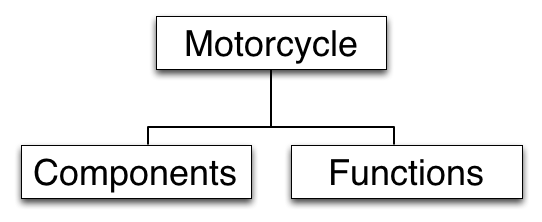
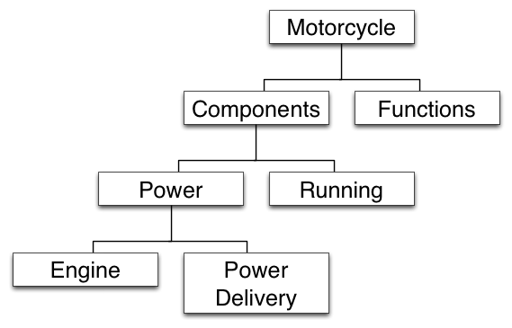

Now I want to begin to fulfill a certain obligation by stating that there was one person, no longer here, who had something to say, and who said it, but whom no one believed or really understood. Forgotten. For reasons that will become apparent I’d prefer that he remain forgotten, but there’s no choice other than to reopen his case.
I don’t know his whole story. No one ever will, except Phaedrus himself, and he can no longer speak. But from his writings and from what others have said and from fragments of my own recall it should be possible to piece together some kind of approximation of what he was talking about. Since the basic ideas for this Chautauqua were taken from him there will be no real deviation, only an enlargement that may make the Chautauqua more understandable than if it were presented in a purely abstract way. The purpose of the enlargement is not to argue for him, certainly not to praise him. The purpose is to bury him...forever.
Back in Minnesota when we were traveling through some marshland I did some talking about the "shapes" of technology, the "death force" that the Sutherlands seem to be running from. I want to move now in the opposite direction from the Sutherlands, toward that force and into its center. In doing so we will be entering Phaedrus’ world, the only world he ever knew, in which all understanding is in terms of underlying form.
The world of underlying form is an unusual object of discussion because it is actually a mode of discussion itself. You discuss things in terms of their immediate appearance or you discuss them in terms of their underlying form, and when you try to discuss these modes of discussion you get involved in what could be called a platform problem. You have no platform from which to discuss them other than the modes themselves.
Previously I was discussing his world of underlying form, or at least the aspect of it called technology, from an external view. Now I think it’s right to talk about that world of underlying form from its own point of view. I want to talk about the underlying form of the world of underlying form itself.
To do this, first of all, a dichotomy is necessary, but before I can use it honestly I have to back up and say what it is and means, and that is a long story in itself. Part of this back-up problem. But right now I just want to use a dichotomy and explain it later. I want to divide human understanding into two kinds...classical understanding and romantic understanding. In terms of ultimate truth a dichotomy of this sort has little meaning but it is quite legitimate when one is operating within the classic mode used to discover or create a world of underlying form. The terms classic and romantic, as Phaedrus used them, mean the following:
A classical understanding sees the world primarily as underlying form itself. A romantic understanding sees it primarily in terms of immediate appearance. If you were to show an engine or a mechanical drawing or electronic schematic to a romantic it is unlikely he would see much of interest in it. It has no appeal because the reality he sees is its surface. Dull, complex lists of names, lines and numbers. Nothing interesting. But if you were to show the same blueprint or schematic or give the same description to a classical person he might look at it and then become fascinated by it because he sees that within the lines and shapes and symbols is a tremendous richness of underlying form.
The romantic mode is primarily inspirational, imaginative, creative, intuitive. Feelings rather than facts predominate. "Art" when it is opposed to "Science" is often romantic. It does not proceed by reason or by laws. It proceeds by feeling, intuition and esthetic conscience. In the northern European cultures the romantic mode is usually associated with femininity, but this is certainly not a necessary association.
The classic mode, by contrast, proceeds by reason and by laws...which are themselves underlying forms of thought and behavior. In the European cultures it is primarily a masculine mode and the fields of science, law and medicine are unattractive to women largely for this reason. Although motorcycle riding is romantic, motorcycle maintenance is purely classic. The dirt, the grease, the mastery of underlying form required all give it such a negative romantic appeal that women never go near it.
Although surface ugliness is often found in the classic mode of understanding it is not inherent in it. There is a classic esthetic which romantics often miss because of its subtlety. The classic style is straightforward, unadorned, unemotional, economical and carefully proportioned. Its purpose is not to inspire emotionally, but to bring order out of chaos and make the unknown known. It is not an esthet- ically free and natural style. It is esthetically restrained. Everything is under control. Its value is measured in terms of the skill with which this control is maintained.
To a romantic this classic mode often appears dull, awkward and ugly, like mechanical maintenance itself. Everything is in terms of pieces and parts and components and relationships. Nothing is figured out until it’s run through the computer a dozen times. Everything’s got to be measured and proved. Oppressive. Heavy. Endlessly grey. The death force.
Within the classic mode, however, the romantic has some appearances of his own. Frivolous, irrational, erratic, untrustworthy, interested primarily in pleasure-seeking. Shallow. Of no substance. Often a parasite who cannot or will not carry his own weight. A real drag on society. By now these battle lines should sound a little familiar.
This is the source of the trouble. Persons tend to think and feel exclusively in one mode or the other and in doing so tend to misunderstand and underestimate what the other mode is all about. But no one is willing to give up the truth as he sees it, and as far as I know, no one now living has any real reconciliation of these truths or modes. There is no point at which these visions of reality are unified.
And so in recent times we have seen a huge split develop between a classic culture and a romantic counterculture...two worlds growingly alienated and hateful toward each other with everyone wondering if it will always be this way, a house divided against itself. No one wants it really...despite what his antagonists in the other dimension might think.
It is within this context that what Phaedrus thought and said is significant. But no one was listening at that time and they only thought him eccentric at first, then undesirable, then slightly mad, and then genuinely insane. There seems little doubt that he was insane, but much of his writing at the time indicates that what was driving him insane was this hostile opinion of him. Unusual behavior tends to produce estrangement in others which tends to further the unusual behavior and thus the estrangement in self-stoking cycles until some sort of climax is reached. In Phaedrus’ case there was a court-ordered police arrest and permanent removal from society.
I see we are at the left turn onto US 12 and John has pulled up for gas. I pull up beside him.
The thermometer by the door of the station reads 92 degrees. "Going to be another rough one today," I say.
When the tanks are filled we head across the street into a restaurant for coffee. Chris, of course, is hungry.
I tell him I’ve been waiting for that. I tell him he eats with the rest of us or not all. Not angrily. Just matter-of-factly. He’s reproachful but sees how it’s going to be.
I catch a fleeting look of relief from Sylvia. Evidently she thought this was going to be a continuous problem.
When we have finished the coffee and are outside again the heat is so ferocious we move off on the cycles as fast as possible. Again there is that momentary coolness, but it disappears. The sun makes the burned grass and sand so bright I have to squint to cut down glare. This US 12 is old, bad highway. The broken concrete is tar-patched and bumpy. Road signs indicate detours ahead. On either side of the road are occasional worn sheds and shacks and roadside stands that have accumulated through the years. The traffic is heavy now. I’m just as happy to be thinking about the rational, analytical, classical world of Phaedrus.
His kind of rationality has been used since antiquity to remove oneself from the tedium and depression of one’s immediate surroundings. What makes it hard to see is that where once it was used to get away from it all, the escape has been so successful that now it is the "it all" that the romantics are trying to escape. What makes his world so hard to see clearly is not its strangeness but its usualness. Familiarity can blind you too.
His way of looking at things produces a kind of description that can be called an "analytic" description. That is another name of the classic platform from which one discusses things in terms of their underlying form. He was a totally classic person. And to give a fuller description of what this is I want now to turn his analytic approach back upon itself...to analyze analysis itself. I want to do this first of all by giving an extensive example of it and then by dissecting what it is. The motorcycle is a perfect subject for it since the motorcycle itself was invented by classic minds. So listen:
A motorcycle may be divided for purposes of classical rational analysis by means of its component assemblies and by means of its functions.
If divided by means of its component assemblies, its most basic division is into a power assembly and a running assembly.
The power assembly may be divided into the engine and the power-delivery system. The engine will be taken up first.
The engine consists of a housing containing a power train, a fuel-air system, an ignition system, a feedback system and a lubrication system.
The power train consists of cylinders, pistons, connecting rods, a crankshaft and a flywheel.
The fuel-air system components, which are part of the engine, consist of a gas tank and filter, an air cleaner, a carburetor, valves and exhaust pipes.
The ignition system consists of an alternator, a rectifier, a battery, a high-voltage coil and spark plugs.
The feedback system consists of a cam chain, a camshaft, tappets and a distributor.
The lubrication system consists of an oil pump and channels throughout the housing for distribution of the oil.
The power-delivery system accompanying the engine consists of a clutch, a transmission and a chain.
The supporting assembly accompanying the power assembly consists of a frame, including foot pegs, seat and fenders; a steering assembly; front and rear shock absorbers; wheels; control levers and cables; lights and horn; and speed and mileage indicators.
That’s a motorcycle divided according to its components. To know what the components are for, a division according to functions is necessary:
A motorcycle may be divided into normal running functions and special, operator-controlled functions.
Normal running functions may be divided into functions during the intake cycle, functions during the compression cycle, functions during the power cycle and functions during the exhaust cycle.
And so on. I could go on about which functions occur in their proper sequence during each of the four cycles, then go on to the operator-controlled functions and that would be a very summary description of the underlying form of a motorcycle. It would be extremely short and rudimentary, as descriptions of this sort go. Almost any one of the components mentioned can be expanded on indefinitely. I’ve read an entire engineering volume on contact points alone, which are just a small but vital part of the distributor. There are other types of engines than the single-cylinder Otto engine described here: two-cycle engines, multiple-cylinder engines, diesel engines, Wankel engines...but this example is enough.
This description would cover the "what" of the motorcycle in terms of components, and the "how" of the engine in terms of functions. It would badly need a "where" analysis in the form of an illustration, and also a "why" analysis in the form of engineering principles that led to this particular conformation of parts. But the purpose here isn’t exhaustively to analyze the motorcycle. It’s to provide a starting point, an example of a mode of understanding of things which will itself become an object of analysis.
There’s certainly nothing strange about this description at first hearing. It sounds like something from a beginning textbook on the subject, or perhaps a first lesson in a vocational course. What is unusual about it is seen when it ceases to be a mode of discourse and becomes an object of discourse. Then certain things can be pointed to.
The first thing to be observed about this description is so obvious you have to hold it down or it will drown out every other observation. This is: It is just duller than ditchwater. Yah-da, yah-da, yah-da, yah-da, yah, carburetor, gear ratio, compression, yah-da-yah, piston, plugs, intake, yah-da-yah, on and on and on. That is the romantic face of the classic mode. Dull, awkward and ugly. Few romantics get beyond that point.
But if you can hold down that most obvious observation, some other things can be noticed that do not at first appear.
The first is that the motorcycle, so described, is almost impossible to understand unless you already know how one works. The immediate surface impressions that are essential for primary understanding are gone. Only the underlying form is left.
The second is that the observer is missing. The description doesn’t say that to see the piston you must remove the cylinder head. "You" aren’t anywhere in the picture. Even the "operator" is a kind of personalityless robot whose performance of a function on the machine is completely mechanical. There are no real subjects in this description. Only objects exist that are independent of any observer.
The third is that the words "good" and "bad" and all their synonyms are completely absent. No value judgments have been expressed anywhere, only facts.
The fourth is that there is a knife moving here. A very deadly one; an intellectual scalpel so swift and so sharp you sometimes don’t see it moving. You get the illusion that all those parts are just there and are being named as they exist. But they can be named quite differently and organized quite differently depending on how the knife moves.
For example, the feedback mechanism which includes the camshaft and cam chain and tappets and distributor exists only because of an unusual cut of this analytic knife. If you were to go to a motorcycle-parts department and ask them for a feedback assembly they wouldn’t know what the hell you were talking about. They don’t split it up that way. No two manufacturers ever split it up quite the same way and every mechanic is familiar with the problem of the part you can’t buy because you can’t find it because the manufacturer considers it a part of something else.
It is important to see this knife for what it is and not to be fooled into thinking that motorcycles or anything else are the way they are just because the knife happened to cut it up that way. It is important to concentrate on the knife itself. Later I will want to show how an ability to use this knife creatively and effectively can result in solutions to the classic and romantic split.
Phaedrus was a master with this knife, and used it with dexterity and a sense of power. With a single stroke of analytic thought he split the whole world into parts of his own choosing, split the parts and split the fragments of the parts, finer and finer and finer until he had reduced it to what he wanted it to be. Even the special use of the terms "classic" and "romantic" are examples of his knifemanship.
But if this were all there were to him, analytic skill, I would be more than willing to shut up about him. What makes it important not to shut up about him was that he used this skill in such a bizarre and yet meaningful way. No one ever saw this, I don’t think he even saw it himself, and it may be an illusion of my own, but the knife he used was less that of an assassin than that of a poor surgeon. Perhaps there is no difference. But he saw a sick and ailing thing happening and he started cutting deep, deeper and deeper to get at the root of it. He was after something. That is important. He was after something and he used the knife because that was the only tool he had. But he took on so much and went so far in the end his real victim was himself.
Precision instruments are designed to achieve an idea, dimensional precision, whose perfection is impossible. There is no perfectly shaped part of the motorcycle and never will be, but when you come as close as these instruments take you, remarkable things happen, and you go flying across the countryside under a power that would be called magic if it were not so completely rational in every way. It’s the understanding of this rational intellectual idea that’s fundamental. John looks at the motorcycle and he sees steel in various shapes and has negative feelings about these steel shapes and turns off the whole thing. I look at the shapes of the steel now and I see ideas. He thinks I’m working on parts.I ‘m working on concepts.
I was talking about these concepts yesterday when I said that a motorcycle can be divided according to its components and according to its functions. When I said that suddenly I created a set of boxes with the following arrangement:

And when I said the components may be subdivided into a power assembly and a running assembly, suddenly appear some more little boxes:

And you see that every time I made a further division, up came more boxes based on these divisions until I had a huge pyramid of boxes. Finally you see that while I was splitting the cycle up into finer and finer pieces, I was also building a structure.
This structure of concepts is formally called a hierarchy and since ancient times has been a basic structure for all Western knowledge. Kingdoms, empires, churches, armies have all been structured into hierarchies. Modern businesses are so structured. Tables of contents of reference material are so structured, mechanical assemblies, computer software, all scientific and technical knowledge is so structured...so much so that in some fields such as biology, the hierarchy of kingdom-phylum-class-order-family-genus-species is almost an icon.
The box "motorcycle" contains the boxes "components" and "functions." The box "components" contains the boxes "power assembly" and "running assembly," and so on. There are many other kinds of structures produced by other operators such as "causes" which produce long chain structures of the form, "A causes B which causes C which causes D," and so on. A functional description of the motorcycle uses this structure. The operator’s "exists," "equals," and "implies" produce still other structures. These structures are normally interrelated in patterns and paths so complex and so enormous no one person can understand more than a small part of them in his lifetime. The overall name of these interrelated structures, the genus of which the hierarchy of containment and structure of causation are just species, is system. The motorcycle is a system. A real system.
To speak of certain government and establishment institutions as "the system" is to speak correctly, since these organizations are founded upon the same structural conceptual relationships as a motorcycle. They are sustained by structural relationships even when they have lost all other meaning and purpose. People arrive at a factory and perform a totally meaningless task from eight to five without question because the structure demands that it be that way. There’s no villain, no "mean guy" who wants them to live meaningless lives, it’s just that the structure, the system demands it and no one is willing to take on the formidable task of changing the structure just because it is meaningless.
But to tear down a factory or to revolt against a government or to avoid repair of a motorcycle because it is a system is to attack effects rather than causes; and as long as the attack is upon effects only, no change is possible. The true system, the real system, is our present construction of systematic thought itself, rationality itself, and if a factory is torn down but the rationality which produced it is left standing, then that rationality will simply produce another factory. If a revolution destroys a systematic government, but the systematic patterns of thought that produced that government are left intact, then those patterns will repeat themselves in the succeeding government. There’s so much talk about the system. And so little understanding.
That’s all the motorcycle is, a system of concepts worked out in steel. There’s no part in it, no shape in it, that is not out of someone’s mind—number three tappet is right on too. One more to go. This had better be it -- .I’ve noticed that people who have never worked with steel have trouble seeing this...that the motorcycle is primarily a mental phenomenon. They associate metal with given shapes...pipes, rods, girders, tools, parts...all of them fixed and inviolable, and think of it as primarily physical. But a person who does machining or foundry work or forge work or welding sees "steel" as having no shape at all. Steel can be any shape you want if you are skilled enough, and any shape but the one you want if you are not. Shapes, like this tappet, are what you arrive at, what you give to the steel. Steel has no more shape than this old pile of dirt on the engine here. These shapes are all out of someone’s mind. That’s important to see. The steel? Hell, even the steel is out of someone’s mind. There’s no steel in nature. Anyone from the Bronze Age could have told you that. All nature has is a potential for steel. There’s nothing else there. But what’s "potential"? That’s also in someone’s mind! -- Ghosts.
That’s really what Phaedrus was talking about when he said it’s all in the mind. It sounds insane when you just jump up and say it without reference to anything specific like an engine. But when you tie it down to something specific and concrete, the insane sound tends to disappear and you see he could have been saying something of importance.